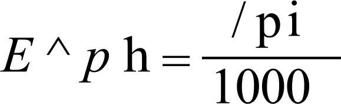
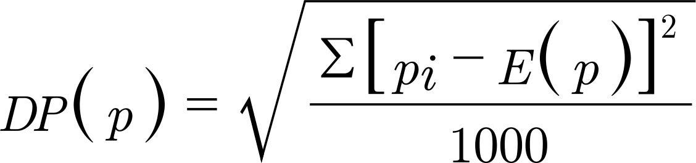
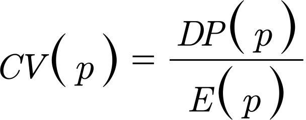
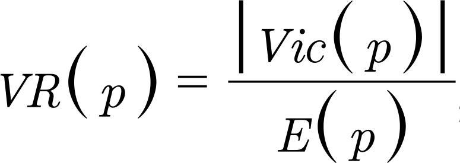
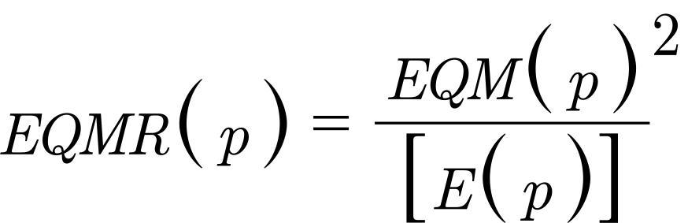
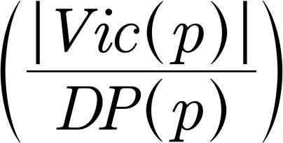

Resumos
OBJETIVO
: Comparar a eficiência e a acurácia de delineamentos de amostragem com e sem sorteio intradomiciliar em inquéritos de saúde.
MÉTODOS
: Com base nos dados de um inquérito realizado na Baixada Santista, SP, entre 2006 e 2007, foram retiradas 1.000 amostras sob cada um dos delineamentos e, em cada amostra, foram obtidas estimativas para pessoas de 18 a 59 anos de idade e de 18 anos e mais. Sob o primeiro, foram sorteados 40 setores censitários, 12 domicílios por setor e uma pessoa por domicílio. Na análise, os dados foram ponderados pelo número de adultos residentes nos domicílios. Sob o segundo, foram sorteados 40 setores, seis domicílios por setor para o grupo de 18 a 59 anos de idade e cinco ou seis domicílios para o grupo de 18 anos e mais. Não houve sorteio dentro do domicílio. Medidas de precisão e de vício das estimativas de proporção para 11 indicadores foram calculadas nos dois conjuntos finais das amostras selecionadas para os dois tipos de delineamentos. Estes foram comparados por meio das medidas relativas: coeficiente de variação, razão vício/média, razão vício/erro padrão e erro quadrático médio relativo. O custo foi comparado considerando custo básico por pessoa, custo por domicílio e números de pessoas e domicílios.
RESULTADOS
: Os vícios mostraram-se desprezíveis nos dois delineamentos. A precisão foi maior para o delineamento sem sorteio e o custo foi menor.
CONCLUSÕES
: O delineamento sem sorteio intradomicilar mostrou-se superior em termos de eficiência e acurácia, devendo ser a opção preferencial do pesquisador. O sorteio de moradores deve ser adotado quando houver razões referentes ao objeto de estudo que possam levar à introdução de vícios nas respostas dos entrevistados no caso de vários moradores responderem ao questionário proposto.
Inquéritos Epidemiológicos, métodos; Inquéritos Demográficos; Amostragem por Conglomerados; Amostragem
OBJETIVO: Comparar la eficiencia y la precisión de delineamientos de muestreo con y sin sorteo intra-domiciliar en pesquisas de salud.
MÉTODOS: Con base en los datos de una pesquisa realizada en la Baixada Santista, SP – Brasil, entre 2006 y 2007, se retiraron 1.000 muestras considerando cada uno de los delineamientos y, en cada muestra, se obtuvo estimativas para personas de 18 a 59 años de edad y de 18 años y más. En el primero, fueron sorteados 40 sectores censados, 12 domicilios por sector y una persona por domicilio. En el análisis, los datos fueron ponderados por el número de adultos residentes en los domicilios. En el segundo, se sortearon 40 sectores, seis domicilios por sector para el grupo de 18 a 59 años de edad y cinco o seis domicilios para el grupo de 18 años y más. No hubo sorteo dentro del domicilio. Medidas de precisión y de vicio de las estimativas de proporción para 11 indicadores fueron calculadas en los dos conjuntos finales de muestras seleccionadas para los dos tipos de delineamientos. Ambos fueron comparados por medio de medidas relativas: coeficiente de variación, cociente vicio/promedio, cociente vicio/desviación estándar y desviación media cuadrática relativa. El costo fue comparado considerando costo básico por persona, costo por domicilio y número de personas y domicilios.
RESULTADOS: Los vicios se mostraron insignificantes en los dos delineamientos. La precisión fue mayor para el delineamiento sin sorteo y el costo fue menor.
CONCLUSIONES: El delineamiento sin sorteo intra-domiciliar se mostró superior en términos de eficiencia y precisión, siendo la opción preferencial del investigador. El sorteo de la población debe ser adoptado cuando existan motivos relacionados con el objeto de estudio que puedan llevar a la introducción de vicios en las respuestas de los entrevistados en el caso de que varios de ellos respondan al cuestionario propuesto.
Encuestas Epidemiológicas, métodos; Encuestas Demográficas; Muestreo por Conglomerados; Muestreo
INTRODUÇÃO
Em inquéritos de base populacional em que amostras em múltiplos estágios são retiradas, o domicílio é sempre utilizado como unidade de amostragem em algum desses estágios. Considerando que as pessoas são os elementos de interesse de tais inquéritos, o domicílio deve ser visto como um conglomerado, na medida em que engloba ou pode englobar vários elementos.
Há, portanto, duas opções para os delineamentos de amostragem a serem utilizados: considerar o domicílio como unidade de último estágio e incluir na amostra todos os moradores que preencham os critérios estabelecidos a a Instituto Brasileiro de Geografia e Estatística (BR). Pesquisa Nacional por Amostra de Domicílios. Brasília (DF); [s.d.]. , b b Centers for Disease Control and Prevention (US). National Health Interview Survey. Washington (DC); [s.d.]. , c c National Centre for Social Research (UK). Health Survey for England. Londres; [s.d.]. ou considerar a inclusão no delineamento de mais um estágio de seleção e sortear um ou mais moradores de cada domicílio. d d Fundação Oswaldo Cruz (BR). Pesquisa Mundial de Saúde no Brasil. Rio de Janeiro; [s.d.]. , e e Centers for Disease Control and Prevention (US). National Health and Nutrition Examination. Washington (DC); [s.d.]. , f f Institut de Veille Sanitaire (FR). Etude Nationale Nutrition Santé. Paris ; [s.d.]. , g g Statistics Canadá (CA). Canadian Community Health Survey. Ottawa; [s.d.].
O primeiro deles é o mais frequentemente utilizado
4
4 Clark RG, Steel DG. Sampling within households in household surveys. J Royal Statist Soc Series A. 2007;170(1):63-82. DOI:10.1111/j.1467-985X.2006.00434.x
https://doi.org/10.1111/j.1467-985X.2006...
e tem como principal vantagem a possibilidade, em função da ausência de sorteio intradomiciliar, de manter a equiprobabilidade de amostras que tenham sido originalmente concebidas com essa propriedade. Por outro lado, entrevistar várias pessoas de uma mesma família poderia diminuir a precisão das estimativas como consequência da homogeneidade existente dentro dos domicílios.
Com o sorteio intradomiciliar e a consequente inclusão na amostra de um número maior de domicílios, esse problema seria contornado. Haveria necessidade, no entanto, de utilizar pesos de amostragem para compensar as diferentes probabilidades de seleção, o que também acarretaria uma diminuição da precisão das estimativas.
O sorteio de pessoas no domicílio é o procedimento mais adequado quando questões sensíveis estão presentes nos questionários e supõe-se que as respostas de um entrevistado podem influenciar as de outros membros da família.
5
5 Clark RG, Steel DG. The effect of using household as a sampling unit. Int Statist Rev. 2002;70(2):289-314. Tem sido adotado, ainda, em algumas pesquisas nas quais o questionário é excessivamente longo, acreditando-se que as taxas de resposta poderiam ser afetadas se a entrevista for percebida como onerosa pelos respondentes.
5
5 Clark RG, Steel DG. The effect of using household as a sampling unit. Int Statist Rev. 2002;70(2):289-314. Nesses casos, os sorteios são usualmente realizados utilizando procedimentos propostos por Kish, adaptados ou não,
2
2 Berquó ES. Selección de unidades de información en encuestas demográficas: un método para construir tablas de sorteio. Santiago: CELADE; 1975 (Notas de Población, 3).
,
9
9 Kish L. A procedure for objetive respondent selection within the household. Amer Statist Assoc J. 1949;44(247):380-7. DOI:10.1080/01621459.1949.10483314
https://doi.org/10.1080/01621459.1949.10...
ou com base em técnicas que selecionam os indivíduos a partir de suas datas de aniversários.
13
13 O’Rourke D, Blair J. Improving random respondent selection in telephone surveys. J Marketing Res. 1983;20(4):428-32.
,
14
14 Oldendick RW, Bishop GF, Sorenson SB, Tuchfarber AJ. A comparison of the Kish and last birthday methods of respondent selection in telephone surveys. J Official Statist. 1988;4(4):307-18.
,
16
16 Salmon CT, Nichols JS. The next-birthday method of respondent selection. Public Opinion Q. 1983;47(2):270-6. DOI:10.1086/268785
https://doi.org/10.1086/268785...
Há pouca literatura sobre sorteio intradomiciliar. Faltam estudos que discutam quantas pessoas devem ser selecionadas nos domicílios e o impacto das diversas alternativas disponíveis nas estatísticas produzidas.
O objetivo deste estudo foi comparar a eficiência e a acurácia de delineamentos de amostragem sem sorteio intradomiciliar e com sorteio de uma única pessoa.
MÉTODOS
Tomou-se como ponto de partida o inquérito domiciliar sobre acesso a serviços de saúde da Baixada Santista, SP, realizado entre 2006 e 2007, no qual haviam sido realizadas 6.826 entrevistas em 2.189 domicílios de 100 setores censitários, incluindo-se na amostra todas as pessoas residentes nos domicílios sorteados. h h Alves MCGP, Escuder MML. Plano de amostragem. In. Escuder MML, Monteiro PHN, Pupo LR. Acesso aos serviços de saúde em municípios da baixada santista. São Paulo: Instituto de saúde; 2009. (Temas em saúde coletiva, 8).
O tamanho dessa amostra e a inclusão de todas as pessoas dos domicílios, com exceção dos que se recusaram a participar do inquérito, permitiram que ela fosse a população de estudo deste trabalho. Dessa forma, do conjunto de dados do inquérito, foram sorteadas 1.000 amostras sob cada um dos delineamentos em avaliação, com e sem sorteio intradomiciliar. Em cada amostra, foram obtidas estimativas para dois grupos populacionais: o de adultos (18 a 59 anos de idade) e o de adultos e idosos em conjunto (18 anos e mais). Esses grupos foram escolhidos por constituírem, com frequência, populações alvo de inquéritos de saúde.
O primeiro delineamento considerou três estágios de seleção: setor censitário, domicílio e indivíduo. Foram sorteados 40 setores censitários com probabilidade proporcional ao tamanho e, posteriormente, 12 domicílios por setor e uma pessoa por domicílio. O tamanho planejado da amostra foi de 480 pessoas. Para compensar as diferenças nas probabilidades de seleção, foram introduzidos pesos equivalentes aos números de adultos ou adultos e idosos existentes nos domicílios selecionados.
O segundo delineamento considerou dois estágios de seleção: setor censitário e domicílio. Foram também sorteados 40 setores censitários com probabilidade proporcional ao tamanho e seis domicílios por setor para adultos e cinco ou seis domicílios (média de 5,66) para adultos e idosos. Não houve sorteio dentro do domicílio. Todas as pessoas dos grupos populacionais de interesse residentes nos domicílios sorteados foram entrevistadas. Considerando, respectivamente, razões de dois adultos e de 2,12 adultos e idosos por domicílio, esperava-se alcançar 480 entrevistas em cada amostra.
O aplicativo Stata Versão 11.2 foi empregado para a produção de uma estrutura de looping capaz de produzir as 1.000 amostras utilizadas em cada um dos delineamentos em avaliação. A função runiform foi utilizada para o estabelecimento de um ponto aleatório para início do sorteio dos setores e, a seguir, dos domicílios. O comando sample foi utilizado para a seleção aleatória do morador dentro de cada um dos domicílios nos delineamentos com sorteio intradomiciliar.
As frações de amostragem utilizadas no sorteio das amostras e outros aspectos referentes aos planos de amostragem estão apresentados na Tabela 1.
Aspectos referentes aos delineamentos de amostragem. Região Metropolitana da Baixada Santista, SP, 2006-2007.
Para a obtenção das estimativas utilizadas, foram escolhidos 11 indicadores de saúde do Inquérito Domiciliar sobre Acesso a Serviços de Saúde da Baixada Santista, i i Escuder MML, Monteiro PHN, Pupo LR. Acesso aos serviços de saúde em municípios da baixada santista. São Paulo: Instituto de saúde; 2009. (Temas em saúde coletiva, 8). agrupados em três categorias, a saber: 1. Situação de saúde (auto avaliação de saúde como ruim ou péssima; não realização das atividades habituais nos últimos 15 dias; referência à hipertensão; referência a diabetes; ingestão de bebida alcoólica nos últimos três meses); 2. Uso e acesso a serviços de saúde (uso de medicamento para hipertensão na última semana; necessidade de atendimento de saúde nos últimos 15 dias; procura de atendimento de saúde nos últimos 15 dias; prescrição de algum medicamento nesse atendimento) e 3. Condição socioeconômica (posse de plano de saúde suplementar e posse de oito ou mais bens domésticos).
Medidas de precisão e de vício das estimativas de proporção para cada indicador considerado foram calculadas nos dois conjuntos finais das 1.000 amostras selecionadas sob os dois tipos de delineamentos.
A média da distribuição de frequência, estimativa do valor esperado do estimador do parâmetro P, foi calculada por:  , sendo p i a proporção estimada na amostra i. O erro padrão do estimador foi calculado por:  ; o vício por: Vic(p)=E(p)-P, e o erro quadrático médio, indicador da acurácia do estimador, por: EQM(p)=[DP(p)]2+[Vic(p)]2.
Os delineamentos de amostragem foram comparados por meio de medidas relativas. 10 10 Kish L. Survey sampling. New York: John Wiley & Sons; 1965. , 12 12 Mohadjer L, Curtin LR. N. Balancing sample design goals for the National Health and Nutrition Examination Survey. Surv Methodol. 2008;34(1):119-26. A precisão foi comparada pelo coeficiente de variação  , o vício por meio do vício relativo (razão entre o vício e a média)  e a acurácia por meio do erro quadrático médio relativo,  . Para detectar o impacto do vício nas inferências por intervalo de confiança, foi empregada a razão entre o vício e o erro padrão  , adotando critério proposto por Cochran. 6 6 Cochran WG. Sampling techniques. 3. ed. New York: John Wiley & Sons; 1977. Se o vício for menor que a décima parte do erro padrão da estimativa (razão menor que 0,10), será considerado desprezível.
Considerou-se que a eficiência de um delineamento diz respeito ao grau de adequação entre as exigências de precisão e vício das estimativas e o custo de obtê-las. Kish 10 10 Kish L. Survey sampling. New York: John Wiley & Sons; 1965. propõe que a comparação entre o custo dos delineamentos com sorteio de uma única pessoa e sem sorteio intradomiciliar seja feita pela expressão: custo = nc + m.dc, em que c é o custo básico por elemento (pessoa), igual para os dois delineamentos, tais como: aplicação de questionários e processamento de dados; dc é o custo de incluir um domicílio, tais como: custo de pedir permissão para entrar no domicílio, de conseguir cooperação dos moradores e de realizar a listagem de moradores; n é número de pessoas e m é o número de domicílios.
RESULTADOS
Foram inicialmente calculadas as proporções populacionais para as variáveis do estudo e as médias das estimativas obtidas sob os dois delineamentos em avaliação, com e sem sorteio intradomiciliar, para os dois grupos populacionais de interesse, adultos e o conjunto de adultos e idosos (Tabela 2).
As diferenças entre a esperança do estimador p e o parâmetro populacional, equivalente ao vício do estimador, foram semelhantes para os dois delineamentos. Isso pode ser atestado pela proximidade das estimativas do vício relativo. As diferenças, à exceção de uma delas, situaram-se na terceira casa decimal (Tabela 3). As razões entre o vício e o erro padrão foram menores que 0,10, indicando vícios desprezíveis para ambos os delineamentos.
A comparação entre os coeficientes de variação indica que existência de sorteio intradomiciliar levou a aumento do erro de amostragem para a maior parte das variáveis (Tabela 4). Esse resultado se reflete nas medidas de acurácia. Para 80,0% das variáveis, as estimativas do erro quadrático médio relativo foram inferiores no delineamento sem sorteio nos domicílios.
Coeficiente de variação [CV(p)] e erro quadrático médio relativo [EQMR(p)], segundo delineamento de amostragem com sorteio (del1) e sem sorteio (del2). Região Metropolitana da Baixada Santista, SP, 2006-2007.
Em relação ao custo, considerando o número de pessoas incluídas na amostra nos dois delineamentos, 480, e os números de domicílios: 480 no delineamento com sorteio e 240 (para adultos) e 226 ou 227 (para adultos e idosos) no delineamento sem sorteio, tem-se que os custos foram maiores para este último. Para adultos, foram pesquisados 240 domicílios a mais; para adultos e idosos em conjunto, 254 domicílios a mais.
DISCUSSÃO
Os resultados do presente estudo indicam que, nas condições em que as amostras foram sorteadas, o delineamento que não prevê o sorteio dentro do domicílio é superior em termos de acurácia ao que preconiza o sorteio de uma pessoa por domicílio. Embora as diferenças não sejam grandes, o menor custo do primeiro delineamento agrega mais uma vantagem, confirmando sua superioridade. Em geral, um desenho ótimo é desenvolvido determinando o efeito no custo e na variância de procedimentos alternativos de amostragem e escolhendo o que minimiza a variância para um custo fixo. 12 12 Mohadjer L, Curtin LR. N. Balancing sample design goals for the National Health and Nutrition Examination Survey. Surv Methodol. 2008;34(1):119-26.
Os números médios de adultos dentro dos domicílios e o de adultos e idosos, em conjunto, foram baixos: 2 e 2,12, respectivamente. Nessa situação, a concentração de entrevistas nos domicílios não é grande, o que favorece a opção de não realizar o sorteio.
10
10 Kish L. Survey sampling. New York: John Wiley & Sons; 1965. Isso ocorre em diversos inquéritos, tanto os que são dirigidos para grupos populacionais específicos,
3
3 Berquó ES, Garcia S, Lima L. Reprodução na juventude: perfis sociodemográficos, comportamentais e reprodutivos na PNDS 2006. Rev Saude Publica. 2012;46(4):685-93. DOI:10.1590/S0034-89102012005000048
https://doi.org/10.1590/S0034-8910201200...
,
17
17 Silva NN. Processo de amostragem. In: Lebrão ML, Duarte YAO. O projeto SABE no Município de São Paulo: uma abordagem inicial. Brasília (DF): Organização Pan-Americana da Saúde; 2003. como os que definem domínios de idade ou sexo.
1
1 Bastos TF, Alves MCGP, Barros MBA, Cesar CLG. A saúde dos homens: desigualdades sociais em estudo de base populacional. Cad Saude Publica. 2012;28(11):2133-42. DOI:10.1590/S0102-311X2012001100013
https://doi.org/10.1590/S0102-311X201200...
,
15
15 Roncalli AG, Silva NN, Nascimento AC, Freitas CHSM, Casotti E, Peres KG, et al. Aspectos metodológicos do Projeto SBBrasil 2010 de interesse para inquéritos nacionais de saúde. Cad Saude Publica. 2012;28Suppl:40-57. DOI:10.1590/S0102-311X2012001300006
https://doi.org/10.1590/S0102-311X201200...
Nestes, a homogeneidade intradomiciliar não é relevante uma vez que as análises são conduzidas para grupos populacionais específicos e para os quais há, geralmente, pequena aglomeração no nível domiciliar.
12
12 Mohadjer L, Curtin LR. N. Balancing sample design goals for the National Health and Nutrition Examination Survey. Surv Methodol. 2008;34(1):119-26. Krenzke et al
11
11 Krenzkle T, Li L, Rust K. Evaluating within household selection rules under a multi-stage design. Surv Methodol. 2010;36(1):111-9. confirmam que, quando há múltiplos domínios de interesse, é frequentemente melhor entrevistar mais de uma pessoa dentro do domicílio.
O efeito de conglomerado é um dos fatores que aumenta a variância das estimativas obtidas nos inquéritos. No entanto, para amostras em múltiplos estágios, o impacto na variância da homogeneidade dentro dos domicílios é afetado pela homogeneidade existente nas unidades de amostragem anteriores. Assim sendo, o impacto incremental da conglomeração dentro de domicílios pode ser amortecido pela dominação dos componentes de variância do primeiro estágio de seleção. 11 11 Krenzkle T, Li L, Rust K. Evaluating within household selection rules under a multi-stage design. Surv Methodol. 2010;36(1):111-9.
No presente estudo, somente os dois indicadores para os quais eram esperados valores iguais para os moradores de um mesmo domicílio (posse de plano de saúde e número de bens no domicílio) apresentaram erros de amostragem maiores sob o delineamento sem sorteio. Embora o estudo desses indicadores não se constitua objeto de pesquisas na área de saúde, é possível supor que existam indicadores “de saúde” para os quais a correlação intradomicílio seja extremamente alta, como ocorre quando estimativas são exatamente iguais para todos os moradores dos domicílios. Nessas situações, a superioridade do delineamento sem sorteio deixa de existir.
Krenzke et al 11 11 Krenzkle T, Li L, Rust K. Evaluating within household selection rules under a multi-stage design. Surv Methodol. 2010;36(1):111-9. avaliaram diversas regras de seleção referentes ao número de adultos sorteados dentro dos domicílios em delineamentos de quatro estágios: sorteio de um adulto independente do número existente; sorteio de um adulto se houver até dois e sorteio de dois para mais adultos; sorteio de um adulto se houver até três e de dois para mais adultos; sorteio de um adulto se houver até quatro e de dois para mais adultos; e sorteio de um ou dois adultos, sendo o tamanho da amostra uma fração. Os autores propuseram uma forma de computar o efeito do delineamento devido à homogeneidade domiciliar. Mediram, então, a redução percentual da função variância/custo para as várias estratégias propostas em relação à de “um adulto sorteado” e verificaram que a homogeneidade domiciliar teve pequeno impacto na redução dessa função. A função variância/custo levou em conta a função custo proposta por Kish, 10 10 Kish L. Survey sampling. New York: John Wiley & Sons; 1965. que inclui o custo de inclusão de uma pessoa e de um domicílio, e os efeitos de delineamento devido à conglomeração e à ponderação. Mostraram, ainda, que a redução foi fortemente influenciada pelo nível de dominação dos componentes de variância dos dois primeiros estágios de seleção.
O efeito de conglomerado não é o único fator que aumenta a variância. Esse aumento também pode ser causado pela utilização de pesos no cálculo das estimativas, decorrente da seleção de indivíduos com probabilidades distintas dentro dos domicílios. Por meio de pesos, cada observação feita na pessoa sorteada é repetida tantas vezes quantas forem os moradores existentes no domicílio, inflacionando o efeito do delineamento. Assim, a probabilidade de seleção passa a depender do número de pessoas no domicílio e o aumento da variância estará diretamente relacionado ao coeficiente de variação desses tamanhos. 11 11 Krenzkle T, Li L, Rust K. Evaluating within household selection rules under a multi-stage design. Surv Methodol. 2010;36(1):111-9. O efeito do delineamento total é, sob algumas condições, o produto do efeito do delineamento devido ao sorteio de conglomerados e do efeito do delineamento devido à ponderação dos dados.
Dentre os fatores que têm sido apontados como favoráveis ao sorteio intradomiciliar inclui-se a possibilidade de que as taxas de respostas sejam afetadas pela sobrecarga que os moradores podem sentir com a realização de várias entrevistas no mesmo domicílio.
4
4 Clark RG, Steel DG. Sampling within households in household surveys. J Royal Statist Soc Series A. 2007;170(1):63-82. DOI:10.1111/j.1467-985X.2006.00434.x
https://doi.org/10.1111/j.1467-985X.2006...
No entanto, estudos recentes têm mostrado resultados que contradizem essa avaliação. Mohadjer et al
12
12 Mohadjer L, Curtin LR. N. Balancing sample design goals for the National Health and Nutrition Examination Survey. Surv Methodol. 2008;34(1):119-26. consideram que a seleção de amostras maiores dentro dos domicílios é uma abordagem com impacto favorável nas taxas de resposta do National Health and Nutrition Examination Survey. Esse inquérito prevê a realização de exames sorológicos e torna-se conveniente para os membros do domicílio ir juntos ao centro de exames. As taxas de resposta para o delineamento sem sorteio foram superiores às obtidas com sorteio (acréscimo de 3,8 a 6,9 pontos percentuais, dependendo do tipo de domicílio). Da mesma forma, Krenzke et al
11
11 Krenzkle T, Li L, Rust K. Evaluating within household selection rules under a multi-stage design. Surv Methodol. 2010;36(1):111-9. não observaram diferenças estatisticamente significantes nas taxas de resposta obtidas sob delineamentos com sorteio de uma ou de duas pessoas por domicílio na National Assessment of Adult Literacy.
Há ainda outros fatores que podem ser levados em conta ao se optar pela realização ou não do sorteio intradomicilar. Contrário ao sorteio está o interesse no estudo da dependência entre valores para diferentes pessoas de um mesmo domicílio.
A favor do sorteio, menciona-se a existência de perguntas sensíveis nos questionários, cujas respostas podem ter a qualidade comprometida ao serem respondidas por mais de uma pessoa do domicílio. 5 5 Clark RG, Steel DG. The effect of using household as a sampling unit. Int Statist Rev. 2002;70(2):289-314. Foreman 7 7 Foreman E. Survey sampling principles. New York: Marcel Dekker; 1991. também aventa a possibilidade de que a reação à entrevista de um dos moradores contamine a resposta de outros, especialmente quando as entrevistas são muito longas ou desconfortáveis. Na mesma linha de argumentação, Kish 10 10 Kish L. Survey sampling. New York: John Wiley & Sons; 1965. afirma que um dos motivos para não realizar mais que uma entrevista por domicílio é evitar que o respondente tenha oportunidade de discutir as questões previamente.
No presente estudo, o custo foi representado pelo número de domicílios, uma vez que o número de pessoas entrevistadas foi igual nos dois delineamentos comparados. O custo de inclusão de um domicílio na amostra é considerado sempre superior ao de inclusão de uma pessoa por envolver a realização da listagem de todos os moradores e o deslocamento entre endereços, quando as entrevistas são face-a-face. Esse deslocamento ocorre em diversos momentos do processo de coleta de dados: identificação dos moradores dos domicílios, realização da entrevista, retornos para reversão da não resposta, supervisão e controle de qualidade.
Em nosso estudo, a amostra de domicílios sob o delineamento sem sorteio foi metade daquela obtida no delineamento com sorteio, mostrando-se, portanto, mais econômica. Esse é um aspecto relevante a ser considerado nos inquéritos domiciliares com entrevistas face-a-face realizados na área de saúde pública, uma vez que a diminuição de gastos é alternativa sempre desejada.
Deve-se considerar, ainda, que o sorteio de pessoas dentro dos domicílios aumenta a complexidade das amostras. É necessário treinar o entrevistador para que, em campo, utilize procedimentos adequados de sorteio que evitem a introdução de vícios. É necessário, ainda, que sejam utilizados pesos que compensem as diferenças na probabilidade de seleção dos indivíduos da amostra, produzidas pelo sorteio de um número fixo de moradores (um, em geral) na presença de diferentes números de moradores. A não introdução desses pesos, como não raro ocorre em análises de dados advindos de inquéritos que utilizam o sorteio intradomiciliar, produz estimativas viciadas.
Os resultados deste estudo mostraram que o delineamento sem sorteio dentro do domicílio é mais eficiente, devendo ser a opção preferencial do pesquisador. O sorteio de moradores deve ser adotado quando houver razões referentes ao objeto de estudo que possam levar à introdução de vícios nas respostas dos entrevistados caso vários moradores respondam ao questionário proposto.
REFERÊNCIAS
-
1Bastos TF, Alves MCGP, Barros MBA, Cesar CLG. A saúde dos homens: desigualdades sociais em estudo de base populacional. Cad Saude Publica. 2012;28(11):2133-42. DOI:10.1590/S0102-311X2012001100013
» https://doi.org/10.1590/S0102-311X2012001100013 -
2Berquó ES. Selección de unidades de información en encuestas demográficas: un método para construir tablas de sorteio. Santiago: CELADE; 1975 (Notas de Población, 3).
-
3Berquó ES, Garcia S, Lima L. Reprodução na juventude: perfis sociodemográficos, comportamentais e reprodutivos na PNDS 2006. Rev Saude Publica. 2012;46(4):685-93. DOI:10.1590/S0034-89102012005000048
» https://doi.org/10.1590/S0034-89102012005000048 -
4Clark RG, Steel DG. Sampling within households in household surveys. J Royal Statist Soc Series A. 2007;170(1):63-82. DOI:10.1111/j.1467-985X.2006.00434.x
» https://doi.org/10.1111/j.1467-985X.2006.00434.x -
5Clark RG, Steel DG. The effect of using household as a sampling unit. Int Statist Rev 2002;70(2):289-314.
-
6Cochran WG. Sampling techniques. 3. ed. New York: John Wiley & Sons; 1977.
-
7Foreman E. Survey sampling principles. New York: Marcel Dekker; 1991.
-
8Kish L, Frankel MR. Inference from complex samples. J Rl Stat Soc. Series B Stat Methodol.1974;36:1-37.
-
9Kish L. A procedure for objetive respondent selection within the household. Amer Statist Assoc J. 1949;44(247):380-7. DOI:10.1080/01621459.1949.10483314
» https://doi.org/10.1080/01621459.1949.10483314 -
10Kish L. Survey sampling. New York: John Wiley & Sons; 1965.
-
11Krenzkle T, Li L, Rust K. Evaluating within household selection rules under a multi-stage design. Surv Methodol. 2010;36(1):111-9.
-
12Mohadjer L, Curtin LR. N. Balancing sample design goals for the National Health and Nutrition Examination Survey. Surv Methodol. 2008;34(1):119-26.
-
13O’Rourke D, Blair J. Improving random respondent selection in telephone surveys. J Marketing Res. 1983;20(4):428-32.
-
14Oldendick RW, Bishop GF, Sorenson SB, Tuchfarber AJ. A comparison of the Kish and last birthday methods of respondent selection in telephone surveys. J Official Statist. 1988;4(4):307-18.
-
15Roncalli AG, Silva NN, Nascimento AC, Freitas CHSM, Casotti E, Peres KG, et al. Aspectos metodológicos do Projeto SBBrasil 2010 de interesse para inquéritos nacionais de saúde. Cad Saude Publica. 2012;28Suppl:40-57. DOI:10.1590/S0102-311X2012001300006
» https://doi.org/10.1590/S0102-311X2012001300006 -
16Salmon CT, Nichols JS. The next-birthday method of respondent selection. Public Opinion Q. 1983;47(2):270-6. DOI:10.1086/268785
» https://doi.org/10.1086/268785 -
17Silva NN. Processo de amostragem. In: Lebrão ML, Duarte YAO. O projeto SABE no Município de São Paulo: uma abordagem inicial. Brasília (DF): Organização Pan-Americana da Saúde; 2003.
- Trabalho apresentado no VIII Congresso de Epidemiologia, São Paulo, SP, 2011 e na III Escola de Amostragem e Metodologia de Pesquisa, Juiz de Fora, MG, 2011.
-
a Instituto Brasileiro de Geografia e Estatística (BR). Pesquisa Nacional por Amostra de Domicílios. Brasília (DF); [s.d.].
-
b Centers for Disease Control and Prevention (US). National Health Interview Survey. Washington (DC); [s.d.].
-
c National Centre for Social Research (UK). Health Survey for England. Londres; [s.d.].
-
d Fundação Oswaldo Cruz (BR). Pesquisa Mundial de Saúde no Brasil. Rio de Janeiro; [s.d.].
-
e Centers for Disease Control and Prevention (US). National Health and Nutrition Examination. Washington (DC); [s.d.].
-
f Institut de Veille Sanitaire (FR). Etude Nationale Nutrition Santé. Paris ; [s.d.].
-
g Statistics Canadá (CA). Canadian Community Health Survey. Ottawa; [s.d.].
-
h Alves MCGP, Escuder MML. Plano de amostragem. In. Escuder MML, Monteiro PHN, Pupo LR. Acesso aos serviços de saúde em municípios da baixada santista. São Paulo: Instituto de saúde; 2009. (Temas em saúde coletiva, 8).
-
i Escuder MML, Monteiro PHN, Pupo LR. Acesso aos serviços de saúde em municípios da baixada santista. São Paulo: Instituto de saúde; 2009. (Temas em saúde coletiva, 8).
- Trabalho financiado pelo Projeto de Expansão e Consolidação do Programa da Saúde da Família – PROESF 2006 do Ministério da Saúde.
Histórico
-
Recebido
6 Set 2012 -
Aceito
4 Set 2013 -
Publicação
Fev 2014